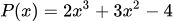
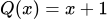

Monomios
¿Qué es un monomio?
Un monomio es una expresión algebraica formada por:
- Un número (llamado coeficiente).
- Una o varias letras (llamadas parte literal).
Las letras pueden tener exponentes naturales (se llaman grado).
👉 Es una expresión de un solo término (no hay sumas ni restas).
✅ Ejemplos de monomios:
- 5x
- −3a2
- 7xy
- 4m3n2
Por ejemplo, en 6x2:
- 6 es el coeficiente.
- x2 es la parte literal.
Polinomios (definición, términos, grado, valor numérico)
Un polinomio es una expresión algebraica formada por la suma o resta de monomios (expresiones de la forma a⋅xn, donde a es un número llamado coeficiente, x es la variable y n es un número natural).
Ejemplo:
P(x)=3x4−2x2+5x−7
- Términos: cada uno de los monomios que forman el polinomio.
En el ejemplo: 3x4, −2x2, 5x, −7.- El caso del -7 es especial, realmente es -7x0 (pues recordemos que x0 = 1), y el nombre específico que recibe es término independiente.
- Grado de un polinomio: el mayor exponente con el que aparece la variable.
En el ejemplo, el grado es 4. - Coeficientes: los números que acompañan a cada potencia de x.
- El caso del 3 al acompañar a la x de mayor grado, x4, es especial, recibe el nombre de coeficiente líder.
- Parte literal: lo componen las variables involucradas en el polinomio, en el ejemplo: x4, x2, x.
- Valor numérico: el resultado que se obtiene al sustituir la variable x por un número concreto.
Por ejemplo: P(2) = 3(2)4−2(2)2+5(2)−7 = 48−8+10−7 = 43
Operaciones con polinomios
Los polinomios se pueden sumar, restar, multiplicar y dividir.
Suma y resta:
Se suman o restan los coeficientes de los términos semejantes (los que tienen la misma potencia de x).
Ejemplos:
(2x2+3x−5) + (x2−2x+7) = 3x2+x+2
(5x3−4x2+x+6) − (10x2−3x−5) = 5x3−6x2−2x+11
Multiplicación:
Se multiplican todos los términos de un polinomio por todos los términos del otro.
Ejemplo:
(x+2)(x−3) = x2−3x+2x−6 = x2−x−6
División:
Se puede dividir un polinomio entre otro.
Ejemplo:
Regla de Ruffini:
Se estudia especialmente la división entre polinomios de la forma (x – a), es decir, un binomio de grado 1, que se resuelve de forma rápida con la Regla de Ruffini.
Ejemplo:  dividido entre  se realizaría conforme a:
Identidades notables
¿Qué son las identidades notables?
Las identidades notables son fórmulas que nos permiten desarrollar multiplicaciones algebraicas de forma rápida, sin tener que hacer todo el proceso paso a paso.
Son igualdades que siempre se cumplen, por eso se llaman identidades.
📌 Las tres identidades notables más importantes
Cuadrado de una suma
(a+b)2 = a2+2ab+b2
Ejemplo:
- (8+4)2 = 82+2·8·4+42 = 64+64+16 = 144
- También se puede calcular como: (8+4)2 = 122 = 144
- También se puede calcular como: (8+4)2 = 122 = 144
🔎 Significa que:
El cuadrado de una suma es: el cuadrado del primero, más el cuadrado del segundo, más el doble producto del primero por el segundo.
✅ Ejemplo:
(x+3)2
Aplicamos la fórmula:
x2+2⋅x⋅3+32 = x2+6x+9
Cuadrado de una diferencia
(a−b)2 = a2−2ab+b2
Ejemplo:
- (8-3)2 = 82 - 2·8·3+ 32 = 64−48+9 = 25
- También se puede calcular como: (8-3)2 = 52 = 25
🔎 Es parecido al anterior, pero el término central es negativo:
El cuadrado de una resta es: el cuadrado del primero, más el cuadrado del segundo, menos el doble producto del primero por el segundo.
✅ Ejemplo:
(x−5)2 = x2−2⋅x⋅5+52 = x2−10x+25
Suma por diferencia (binomios conjugados)
(a+b)(a−b) = a2−b2
Ejemplo:
- 52-32 = (5+3)(5-3) = 8·2 = 16
- También se puede calcular como: 52-32 = 25-9 = 16
🔎 Aquí ocurre algo especial:
Suma por diferencia es diferencia de cuadrados.
✅ Ejemplo:
(x+4)(x−4) = x2−16 = x2−42
(Se multiplican los términos y desaparece el término central)
🎯 ¿Para qué sirven?
- Para desarrollar expresiones rápidamente
- Para simplificar operaciones
- Para factorizar
- Para resolver ecuaciones
Factorización de polinomios y Teorema del resto
Teorema del Resto
El Teorema del Resto establece lo siguiente: Si se divide un polinomio P(x) entre el binomio (x−a), el resto de la división es exactamente el valor numérico de P(a).
En otras palabras: Resto=P(a)
Ejemplo práctico:
- P(x)=x3−2x2+3x−4
- Queremos dividir entre (x−2).
- Según el teorema del resto: Resto = P(2) = (2)3−2(2)2+3(2)−4 = 8−8+6−4 = 2. Por tanto, al dividir P(x) entre (x−2), el resto será 2.
🔎 Importancia del Teorema del Resto: Sirve para comprobar de manera rápida si un número es raíz de un polinomio. 👉 Si P(a)=0, entonces a es raíz y (x−a) es factor del polinomio.
Es una herramienta básica en el proceso de factorización.
Factorización de polinomios
1. ¿Qué significa factorizar un polinomio?
Factorizar un polinomio es escribirlo como producto de factores más simples (binomios de grado 1 ó 2).
Esto nos permite:
- Resolver ecuaciones polinómicas (P(x)=0).
- Simplificar expresiones algebraicas.
- Comprender mejor sus raíces.
Por ejemplo:
x2−5x+6 = (x−2)·(x−3)
2. Relación entre raíces y factores
Si un número r es raíz de un polinomio, es decir, si P(r)=0, entonces: (x−r) es un factor de P(x). Esto significa que cada raíz encontrada nos da un factor lineal del polinomio.
3. La regla de Ruffini
Como ya hemos visto antes, la regla de Ruffini es un procedimiento rápido para dividir un polinomio entre (x−r).
Nos ayuda a:
- Comprobar si r es una raíz.
- Obtener un polinomio de grado más bajo.
4. ¿Cómo buscar raíces candidatas?
Si el polinomio es: P(x)=anxn+⋯+a1x+a0.
Las posibles raíces enteras están entre los divisores del término independiente (a0).
👉 Esto nos ahorra tiempo, porque no hay que probar infinitos valores.
5. Ejemplo paso a paso
Ejemplo:
P(x)=x3−6x2+11x−6
El término independiente es −6.
Divisores posibles: ±1, ±2, ±3, ±6.
Probamos con x=1: P(1) = 1−6+11−6 = 0 ⇒ x=1 es raíz.
Aplicamos Ruffini para dividir entre (x−1):
Resultado: P(x)=(x−1)(x2−5x+6)
Ahora factorizamos el trinomio cuadrado: x2−5x+6
El término independiente es 6.
Divisores posibles: ±1, ±2, ±3, ±6.
Probamos con x=2: P(2) = 22−5·2+6 = 0 ⇒ x=2 es raíz.
Aplicamos Ruffini para dividir entre (x−2):
Por tanto, el polinomio completo se factoriza como: P(x) = (x−1)·(x−2)·(x−3)
Obviamente esto podría haberse realizado una vez indentificadas las raíces x=1 y x=2 aplicando la regla de Ruffini encadenadamente:
6. Interpretación gráfica
Cada factor corresponde a una raíz o punto de corte con el eje X:
- La recta x−1 = 0 corta en x=1.
- La recta x−2 = 0 corta en x=2.
- La recta x−3 = 0 corta en x=3.
Así, factorizar ayuda a “descomponer” el polinomio y entender cómo se comporta su gráfica. Pues implica conocer sus cortes con el eje X.
7. Resumen sintético
- Paso 1: Busca las raíces candidatas (divisores del término independiente).
- Paso 2: Comprueba cuáles anulan el polinomio.
- Paso 3: Divide con Ruffini para reducir el grado.
- Paso 4: Repite el proceso hasta llegar a factores simples (lineales o cuadráticos).
- Paso 5: Expresa el polinomio como producto de factores.
M.C.D. y m.c.m. de dos polinomios
Gracias a la factorización de polinomios, ya podemos calcular el mínimo común múltiplo (m.c.m.) y el máximo común divisor (M.C.D.) de dos polinomios:
- Mínimo común múltiplo: factores comunes y no comunes con mayor exponente.
- Máximo común divisor: factores comunes con menor exponente.
📘 Ejemplo:
Vamos a trabajar con los polinomios:
- P(x)=x2−4
- Q(x)=x2−x
🔹 Paso 1: Factorizar cada polinomio
- P(x)=x2−4=(x−2)(x+2)
- Q(x)=x2−x=x(x−1)
🔹 Paso 2: Máximo Común Divisor (M.C.D.)
- El m.c.d. se forma con los factores comunes (si los hay) en su menor exponente.
- Factores de P(x): (x−2), (x+2).
- Factores de Q(x): x, (x−1).
- No tienen factores comunes.
- 👉 Por tanto:
- M.C.D.(P,Q) = 1
🔹 Paso 3: Mínimo Común Múltiplo (m.c.m.)
- El m.c.m. se forma con todos los factores distintos de ambos polinomios, cada uno con su mayor exponente.
- Factores de P(x): (x−2), (x+2).
- Factores de Q(x): x, (x−1).
- 👉 El m.c.m. es:
- m.c.m.(P,Q) = x(x−1)(x−2)(x+2)
A la hora de factorizar polinomios, debemos recordar ciertos "aceleradores":
- Si un polinomio no tiene término independiente siempre podemos sacar factor común x, al menos una vez, lo que nos permitiría identificar x=0 como raíz. Ejemplo: x3-x = x·(x2-1).
- Reconocer las siguientes identidades notables en los polinomios a factorizar:
- En polinomios de segundo grado, se puede usar la fórmula de cálculo de las soluciones de la ecuación de segundo grado para identificar las raíces: